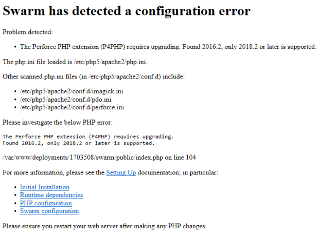

Upgrading a tarball installation
The section describes how to upgrade a Swarm tarball installation to a newer release.
The following process attempts to minimize downtime, but a short period of downtime for Swarm users is unavoidable. There should be no downtime for your Helix server. After a successful upgrade, all Swarm users are logged out.
If you are using Swarm in a production environment, we encourage you to test this upgrade process in a non-production environment first.
- Swarm runtime dependencies change between releases, you must check that your system satisfies the Swarm runtime dependencies before starting the upgrade, see Runtime dependencies.
- P4PHP
 The PHP interface to the Helix API, which enables you to write PHP code that interacts with a Helix server machine. should be upgraded to the version included in the new Swarm release.
The PHP interface to the Helix API, which enables you to write PHP code that interacts with a Helix server machine. should be upgraded to the version included in the new Swarm release. - If you have already configured PHP to use the Swarm-provided P4PHP (as recommended), this happens automatically.
- If you have manually installed P4PHP in some other fashion, configure Swarm to use the version of P4PHP included in the new Swarm tarball before you perform any of the upgrade steps below. See PHP configuration for details.
Swarm package, OVA and tarball installations: 2 versions of P4PHP are supplied for each PHP 7 version supported by Swarm. They are located in the p4-bin/bin.linux26x86_64 directory.
- perforce-php7x.so compatible with systems using SSL 1.0.2
- perforce-php7x-ssl1.1.1.so compatible with systems using SSL 1.1.1 (by default Ubuntu 18.04 and Ubuntu 20.04 use SSL 1.1.1)
Where x is the version of PHP 7.
If the perforce.ini file is not pointing at the correct version of P4PHP and you connect to an SSL enabled Helix server:
- The Swarm web-page will not load and you might see a Connection Reset error.
- There might be an undefined symbol: SSLeay message in the Apache error log
-
Review the PHP requirements before you upgrade Swarm, see PHP.
- Review the Helix server requirements before you upgrade Swarm, see Helix Core server requirements.
- Helix server 2020.1 and later, permissions have changed for viewing and editing stream spec files in Swarm. To view and edit stream spec files in Swarm, the Swarm user must have admin permissions for the entire depot //...
-
If you are upgrading from Swarm 2017.2 or earlier, run the Swarm index upgrade after you have validated your upgrade. This is the last step of the upgrade and ensures that the review activity history is displayed in the correct order on the Dashboard, and Reviews list pages.
-
If you are upgrading from Swarm 2020.2 or earlier and have userids that contain the forward slash (/) character, add AllowEncodedSlashes NoDecode to the VirtualHost block of your /etc/apache2/sites-enabled/perforce-swarm-site.conf file. For more information about the VirtualHost block, see Apache configuration.
PHP 7.x and Apache 2.4 installation
CentOS and RHEL do not have PHP 7.x and Apache 2.4 by default so you must upgrade your system before you can upgrade Swarm. This process is only required the first time you upgrade to PHP 7.x. If you have already upgraded to PHP 7.x and Apache 2.4, see Configure Redis on the Swarm machine.
Carry out the following steps:
-
As part of the PHP upgrade process your Apache 2.2 server will be stopped and disabled, if you are currently using the Apache 2.2 server for any other applications they will stop working. You will either need to upgrade these applications to work with PHP 7 and Apache 2.4 or move them to another server.
-
CentOS/RHEL 7: Use the Remi repository configuration package (remi-release-7.rpm) to give Swarm access to PHP 7.x. Use the epel-release-latest-7.noarch.rpm repository configuration package to give Swarm access to EPEL packages.
-
RHEL 8: Use the Remi repository configuration package (remi-release-8.rpm) to give Swarm access to PHP 7.x. Use the epel-release-latest-8.noarch.rpm repository configuration package to give Swarm access to EPEL packages.
-
Swarm 2019.1 to 2020.1: these versions of Swarm used PHP packages from the SCL repositories for CentOS/RHEL 7. This was to provide access to more recent versions of PHP than are available as standard on CentOS/RHEL. This required the use of the httpd24-httpd package for Apache. These were all installed into /opt/rh
Swarm 2020.2 and later: these versions of Swarm uses the Remi repository for CentOS/RHEL 7 and RHEL 8. This provides PHP 7.4 installed in the standard file system structure. This means that the old httpd24-httpd version of Apache is no longer needed, and the standard system version of Apache is being used again.
The SCL Apache site configuration file was installed at this location for Swarm 2019.1 to 2020.1:
/opt/rh/httpd24/root/etc/httpd/conf.d/perforce-swarm-site.conf
If this exists when Swarm is upgraded to 2020.2 and later, this file is copied to /etc/httpd/conf.d/perforce-swarm-site.conf if there is no file at the destination. It is also re-written to change references from /var/log/httpd24 to /var/log/httpd
If a site configuration file for Swarm already exists in /etc/httpd, the copy and re-write is not performed.
After upgrade, httpd24-httpd is disabled.
-
To avoid seeing the Apache HTTP server Linux test page when you start the Apache server, comment out the content of the welcome.conf file located in the /etc/httpd/conf.d/ directory.
-
To avoid loading the Apache HTTP server example configuration instead of the Swarm configuration when the Apache server starts, rename the autoindex.conf file located in the /etc/httpd/conf.d/ directory to z-autoindex.conf or similar. This is required because Apache runs the first conf file it finds in the /etc/httpd/conf.d/ directory (alphabetical order) and that must be the perforce-swarm-site.conf file.
This section describes how to install PHP 7.x and Apache 2.4 on your system using a repository .
-
This process is only required the first time you upgrade to PHP 7.x. Install PHP 7.x and migrate the Swarm Apache configuration to use Apache 2.4. .
Follow the instructions for your OS distribution, see CentOS/REHL 7 or RHEL 8 below:
- Deploy the epel-release-latest-7.noarch.rpm repository configuration package to give Swarm access to EPEL packages:
- Deploy the Remi repository configuration package to give Swarm access to PHP 7.x (only required the first time you upgrade to PHP 7.x):
- Install the yum-utils package to give access to the yum-config-manager command:
-
Enable the optional channel for some dependencies:
- Install the Default/Single version of PHP:
- Disable remi-php*:
- Enable PHP 7.4:
- Run an upgrade for PHP:
yum-config-manager --disable 'remi-php*'
yum-config-manager --enable remi-php74
yum update
- If you are upgrading from Apache 2.2, disable your Apache 2.2 HTTP server so that is does not automatically start:
- If you are upgrading from Apache 2.2, stop your Apache 2.2 HTTP server:
- If you are upgrading from PHP 7.2, copy the 30-perforce.ini file to /etc/php.d/ directory, this step also changes the ini filename to perforce.ini:
- If you are upgrading from PHP 7.2, replace the PHP 7.2 references with PHP 7.4 in the perforce.ini file using the sed command:
- If you have any special php.ini configuration options set, copy the php.ini file to the /etc/php.d/ directory, for example:
- Copy the perforce-swarm-site.conf file to the /etc/httpd/conf.d/ directory if it is not already in there, for example:
- Replace the /log/httpd24 filepath with /log/httpd/ in the perforce-swarm-site.conf file using the sed command:
- Enable your Apache 2.4 HTTP server so that it automatically starts:
- Start the Apache 2.4 HTTP server:
- Check that SELinux is working correctly for your system. For instructions on configuring SELinux on CentOS/RHEL, see SELinux configuration.
-
RHEL 8 (run these commands as root):
- Deploy the epel-release-latest-8.noarch.rpm repository configuration package to give Swarm access to EPEL packages:
- Deploy the Remi repository configuration package to give Swarm access to PHP 7.x (only required the first time you upgrade to PHP 7.x):
- Install the yum-utils package to give access to the yum-config-manager command:
-
Enable the optional channel for some dependencies:
- Install the Default/Single version of PHP:
- Enable the module stream for PHP 7.4:
- Install PHP 7.4:
- Run an upgrade for PHP:
dnf module reset php
dnf module install php:remi-7.4
dnf update
- If you are upgrading from Apache 2.2, disable your Apache 2.2 HTTP server so that is does not automatically start:
- If you are upgrading from Apache 2.2, stop your Apache 2.2 HTTP server:
- If you are upgrading from PHP 7.2, copy the 30-perforce.ini file to /etc/php.d/ directory, this step also changes the ini filename to perforce.ini:
- If you are upgrading from PHP 7.2, replace the PHP 7.2 references with PHP 7.4 in the perforce.ini file using the sed command:
- If you have any special php.ini configuration options set, copy the php.ini file to the /etc/php.d/ directory, for example:
- Copy the perforce-swarm-site.conf file to the /etc/httpd/conf.d/ directory if it is not already in there, for example:
- Replace the /log/httpd24 filepath with /log/httpd/ in the perforce-swarm-site.conf file using the sed command:
- Enable your Apache 2.4 HTTP server so that it automatically starts:
- Start the Apache 2.4 HTTP server:
- Check that SELinux is working correctly for your system. For instructions on configuring SELinux on CentOS/RHEL, see SELinux configuration.
dnf install https://dl.fedoraproject.org/pub/epel/epel-release-latest-8.noarch.rpm
dnf install https://rpms.remirepo.net/enterprise/remi-release-8.rpm
dnf install yum-utils
subscription-manager repos --enable=rhel-8-server-optional-rpms
ImportantIf you are upgrading from Swarm 2019.3 to Swarm 2021.1 or later, remove the Swarm PHP 7.1 files:
yum remove $(yum list installed | grep php71 | awk '{print $1}')
systemctl disable httpd
systemctl stop httpd
cp /etc/opt/rh/rh-php72/php.d/30-perforce.ini /etc/php.d/perforce.ini
sed -i "s/72/74/g" /etc/php.d/perforce.ini
cp /etc/opt/rh/rh-php72/php.d/php.ini /etc/php.d/php.ini
cp /opt/rh/httpd24/root/etc/httpd/conf.d/perforce-swarm-site.conf /etc/httpd/conf.d/perforce-swarm-site.conf
sed -i "s#/log/httpd24/#/log/httpd/#g" /etc/httpd/conf.d/perforce-swarm-site.conf
systemctl enable httpd
systemctl start httpd
yum install https://dl.fedoraproject.org/pub/epel/epel-release-latest-7.noarch.rpm
yum install https://rpms.remirepo.net/enterprise/remi-release-7.rpm
yum install yum-utils
subscription-manager repos --enable=rhel-7-server-optional-rpms
ImportantIf you are upgrading from Swarm 2019.3 to Swarm 2021.1 or later, remove the Swarm PHP 7.1 files:
yum remove $(yum list installed | grep php71 | awk '{print $1}')
systemctl disable httpd
systemctl stop httpd
cp /etc/opt/rh/rh-php72/php.d/30-perforce.ini /etc/php.d/perforce.ini
sed -i "s/72/74/g" /etc/php.d/perforce.ini
cp /etc/opt/rh/rh-php72/php.d/php.ini /etc/php.d/php.ini
cp /opt/rh/httpd24/root/etc/httpd/conf.d/perforce-swarm-site.conf /etc/httpd/conf.d/perforce-swarm-site.conf
sed -i "s#/log/httpd24/#/log/httpd/#g" /etc/httpd/conf.d/perforce-swarm-site.conf
systemctl enable httpd
systemctl start httpd
- PHP 7.x and Apache 2.4 are now installed, configure the Swarm Redis service on the Swarm machine, see Configure Redis on the Swarm machine.
Configure Redis on the Swarm machine
Follow the instructions for the Swarm version you are upgrading from:
Upgrade from Swarm 2019.1 and earlier
Swarm requires Redis to manage its caches and by default Swarm uses its own Redis server on the Swarm machine. Swarm caches data from the Helix server to improve the performance of common searches in Swarm and to reduce the load on the Helix server. Redis is included in the Swarm Tarball installation.
This section describes how to configure the Swarm Redis service on the Swarm machine. Do not change the default values of the following configuration files if you are using the Swarm Redis server.
If required, you can use your own Redis server instead of the Swarm Redis server. For instructions on how to configure Swarm to use your own Redis server, see Use your own Redis server.
Swarm has two Redis binaries in SWARM_ROOT/p4-bin/bin.linux26x86_64/:
- redis-server-swarm
- redis-cli-swarm
- Configure the Redis cache database, enter the following details in the redis-server.conf file in /opt/perforce/etc/:
- The default settings are shown below, the redis-server.conf file contains more detailed information about the Redis configuration for Swarm.
- On Swarm systems with a large number of users, groups, and projects, start-up time can be improved by persisting the memory cache. You can persist the memory cache by disabling background saves and enabling append saves, see the redis-server.conf file comments for detailed information.
- bind 127.0.0.1 - Redis server IP address (loopback interface)
- port 7379 - Redis server port number
- supervised auto - detects the use of upstart or systemd automatically to signal that the process is ready to use the supervisors
- save "" - background saves disabled, recommended.
- dir /opt/perforce/swarm/redis - the directory the Redis cache database is stored in.
- The Redis cache database must be running before Swarm starts so we recommend setting it up as a service so that it starts automatically at boot time.
- run the Redis service as the Perforce user
- use the configuration file in /opt/perforce/etc/redis-server.conf
- assume the database server is installed in /opt/perforce/swarm/p4-bin/bin.linux26x86_64/
- Create the
SWARM_ROOT/data/config.phpfile if it does not already exist. The redis block of theSWARM_ROOT/data/config.phpfile contains the password, namespace, host and port details of the Swarm Redis server: - password: Redis server password. Defaults to null and should be left at default if using the Swarm Redis server.
- namespace: the prefix used for key values in the Redis cache. Defaults to Swarm and should be left at default if using the Swarm Redis server.
- host: Redis server hostname. Defaults to localhost and should be left at default if using the Swarm Redis server.
- port: Redis server port number. Defaults to 7379. Swarm uses port 7379 as its default to avoid clashing with other Redis servers that might be on your network. It should be left at default if using the Swarm Redis server. The default port for a non-Swarm Redis server is 6379.
- items_batch_size: Maximum number of key/value pairs allowed in an mset call to Redis. Sets exceeding this will be batched according to this maximum for efficiency. Defaults to 100000.
- check_integrity: In some circumstances, such as when changes are made in the Helix server when Swarm is down or if errors occur during updates, the Redis cache can get out of sync with the Helix server. Swarm can run a regular integrity check to make sure that the Redis caches and Helix server are in sync. If an integrity check finds an out of sync cache file, Swarm automatically updates the data in that cache.
- population_lock_timeout: specifies the timeout, in seconds, for initial cache population. If you have a large Swarm system, increase this time if the initial cache population times out. Defaults to 300 seconds.
bind 127.0.0.1
port 7379
supervised auto
save ""
dir /opt/perforce/swarm/redis
Default values:
To fine-tune your Redis server settings, make your changes in the Laminas Redis adapter. For information about the Laminas Redis adapter, see the Laminas Redis Adapter documentation.
The following example script will:
To configure Redis as a service, add a script with the following content in /etc/systemd/system
redis-server-swarm.service
[Unit]
Description=Redis Server for Swarm
After=network.target
[Service]
ExecStart=/opt/perforce/swarm/p4-bin/bin.linux26x86_64/redis-server-swarm /opt/perforce/etc/redis-server.conf
ExecStop=/opt/perforce/swarm/p4-bin/bin.linux26x86_64/redis-cli-swarm shutdown
Restart=always
RestartSec=10
StandardOutput=syslog
StandardError=syslog
SyslogIndentifier=redis
User=perforce
Group=perforce
[Install]
WantedBy=multi-user.target
<?php
// this block should be a peer of 'p4'
'redis' => array(
'options' => array(
'password' => null, // Defaults to null
'namespace' => 'Swarm',
'server' => array(
'host' => 'localhost', // Defaults to 'localhost' or enter your Redis server hostname
'port' => '7379', // Defaults to '7379 or enter your Redis server port
),
),
'items_batch_size' => 100000,
'check_integrity' => '03:00', // Defaults to '03:00' Use one of the following two formats:
// 1) The time of day that the integrity check starts each day. Set in 24 hour format with leading zeros and a : separator
// 2) The number of seconds between each integrity check. Set as a positive integer. Specify '0' to disable the integrity check.
'population_lock_timeout' => 300, // Timeout for initial cache population. Defaults to 300 seconds.
),
Configurables:
If you have multiple-Swarm instances running against a single Redis server, each Swarm server must use a different Redis namespace. This enables the cache data for the individual Swarm instances to be identified. The namespace is limited to ≤ 128 characters.
If one or more of your Swarm instances is connected to multiple-Helix servers, the Redis namespace includes the server label and the character limit is reduced to ≤ 127 characters, see Multiple-Helix server instances.
The default value of 100000 was chosen to strike a balance between efficiency and project data complexity. This value should not normally need to be changed, contact support before making a change to this value.
The check_integrity configurable specifies when the Redis cache integrity check is run. Set as a specific time of day (24 hour format with leading zeros) or a number of seconds (positive integer) between checks. Disable the integrity check with '0'. Defaults to '03:00'.
Now that the Swarm Redis service is configured for the Swarm machine, start your Swarm upgrade, see Upgrade Swarm.
Upgrade from Swarm 2019.2 and later
Swarm requires Redis to manage its caches and by default Swarm uses its own Redis server on the Swarm machine. Swarm caches data from the Helix server to improve the performance of common searches in Swarm and to reduce the load on the Helix server. Redis is included in the Swarm Tarball installation.
If you are using your own Redis server instead of the Swarm Redis server, upgrade your Redis server to the version supplied with your Swarm upgrade.
Swarm has two Redis binaries in SWARM_ROOT/p4-bin/bin.linux26x86_64/:
- redis-server-swarm
- redis-cli-swarm
If the Redis binaries supplied with your new version of Swarm have been updated, your Redis server is automatically upgraded to the new Redis server version. Your original Redis configuration files will not be changed. Do not change the default values of the Redis configuration files if you are using the Swarm Redis server.
Restart the Redis server:
If the Redis binaries have been updated and you are running Redis as a service (recommended), you must restart the Redis server to use the new Redis server version.
- Run the following command to restart the Redis server:
- You are now running the updated Redis server version.
-
Now that the Swarm Redis service is configured for the Swarm machine, start your Swarm upgrade, see Upgrade Swarm.
systemctl restart redis-server-swarm
On Swarm systems with a large number of users, groups, and projects, start-up time can be improved by persisting the memory cache. You can persist the memory cache by disabling background saves and enabling append saves, see the redis-server.conf file comments for detailed information.
Upgrade Swarm
The steps in this section describe how to upgrade Swarm using the provided archive file. SWARM_ROOT refers to the current Swarm installation.
For OVA installations, SWARM_ROOT is /opt/perforce/swarm.
-
Download the new TAR file from https://www.perforce.com/downloads/helix-swarm.
-
Expand the new
swarm.tgz:tar -zxf swarm.tgz
The contents of
swarm.tgzare expanded into a top-level folder namedswarm-version, whereversioncorresponds to the version downloaded. This directory is identified asSWARM_NEWbelow. -
Move
SWARM_NEWto be a peer ofSWARM_ROOT:mv SWARM_NEW SWARM_ROOT/../
-
Copy the
SWARM_ROOT/data/config.phpfile fromSWARM_ROOTtoSWARM_NEW:cp -p SWARM_ROOT/data/config.php SWARM_NEW/data/
-
Create the queue token directory:
mkdir SWARM_NEW/data/queue
-
Copy the existing trigger token(s):
sudo cp -pR SWARM_ROOT/data/queue/tokens SWARM_NEW/data/queue/
-
Assign correct ownership to the new Swarm's data directory:
sudo chown -R www-data SWARM_NEW/data
NoteThe www-data user above is an example of what the web server user name might be, and can vary based on distribution or customization. For example, the user is typically apache for Red Hat/CentOS and www-data for Debian/Ubuntu.
-
Update your triggers, see Update your triggers .
Update your triggers
If you are using Swarm Helix server Triggers, the Swarm Helix server extension must not be installed.
-
Copy the new Swarm trigger script to your Helix Core server machine. The trigger script is
SWARM_ROOT/p4-bin/scripts/swarm-trigger.pl, and requires installation of Perl 5.08+ (use the latest available) on the Helix server machine. If Swarm is using SSL, then the triggers also require theIO::Socket::SSLPerl module.WarningDo not overwrite any existing trigger script at this time. Give the script a new name, for example:
swarm-trigger-new.pl. -
Configure the Swarm trigger script by creating, in the same directory on the Helix server machine,
swarm-trigger.conf. It should contain:NoteIf you already have a
swarm-trigger.conffile, no additional configuration is required.# SWARM_HOST (required) # Hostname of your Swarm instance, with leading "http://" or "https://". SWARM_HOST="http://my-swarm-host" # SWARM_TOKEN (required) # The token used when talking to Swarm to offer some security. To obtain the # value, log in to Swarm as a super user and select 'About Swarm' to see the # token value. SWARM_TOKEN="MY-UUID-STYLE-TOKEN" # ADMIN_USER (optional) Do not use if the Workflow feature is enabled (default) # For enforcing reviewed changes, optionally specify the normal Perforce user # with admin privileges (to read keys); if not set, will use whatever Perforce # user is set in environment. ADMIN_USER= # ADMIN_TICKET_FILE (optional) Do not use if the Workflow feature is enabled (default) # For enforcing reviewed changes, optionally specify the location of the # p4tickets file if different from the default ($HOME/.p4tickets). # Ensure this user is a member of a group with an 'unlimited' or very long # timeout; then, manually login as this user from the Perforce server machine to # set the ticket. ADMIN_TICKET_FILE= # VERIFY_SSL (optional) # If HTTPS is being used on the Swarm web server, then this controls whether # the SSL certificate is validated or not. By default this is set to 1, which # means any SSL certificates must be valid. If the web server is using a self # signed certificate, then this must be set to 0. # set the ticket. VERIFY_SSL=1
Fill in the required SWARM_HOST and SWARM_TOKEN variables with the configuration from any previous Swarm trigger script, typically
swarm-trigger.pl.TipThe ADMIN_USER and ADMIN_TICKET variables were used by the 'enforce triggers' in Swarm 2019.1 and earlier. They can be removed unless you are explicitly disabling workflow and using the deprecated 'enforce triggers'.
NoteSwarm 2015.4 and earlier: Swarm trigger script files were available as shell scripts in these earlier Swarm versions, typically
swarm-trigger.sh.Swarm must now use a Perl trigger script file, typically
swarm-trigger.pl. -
On Linux: ensure that the script is executable:
sudo chmod +x swarm-trigger-new.pl
-
Rename the new trigger script:
On Linux:
mv swarm-trigger-new.pl swarm-trigger.pl
On Windows:
ren swarm-trigger-new.pl swarm-trigger.pl
-
Update the triggers in your Helix server.
Warning-
The swarm.shelvedel shelve-delete trigger line was added to Swarm in version 2018.1 and updated in version 2020.1.
- Upgrading from Swarm 2017.4 and earlier: add the
swarm.shelvedel shelve-deletetrigger line to the Helix server trigger table if it is not already present, see Update the Helix server triggers table to run the trigger script. - Upgrading from Swarm 2018.x and 2019.x: replace the existing
swarm.shelvedel shelve-deletetrigger line in the Helix server trigger table with the one supplied in the Swarm version you are upgrading to.
- Upgrading from Swarm 2017.4 and earlier: add the
-
Workflow feature:
The Workflow feature is enabled by default in Swarm 2019.2 and later. The trigger lines required when workflow is enabled are different to those required when workflow is disabled:
- Workflow feature enabled (default):
- Comment out the swarm.enforce.1, swarm.enforce.2, swarm.strict.1, and swarm.strict.2 trigger lines in the Helix server trigger table if they are present, see Update the Helix server triggers table to run the trigger script.
- Add the
swarm.enforce change-submit,swarm.strict change-content, andswarm.shelvesub shelve-submittrigger lines to the Helix server trigger table if they are not already present, see Update the Helix server triggers table to run the trigger script.
- Workflow feature disabled:
Comment out the
swarm.enforce change-submit,swarm.strict change-content, andswarm.shelvesub shelve-submittrigger lines in the Helix server trigger table if they are present, see Update the Helix server triggers table to run the trigger script.
- Workflow feature enabled (default):
-
Run the Swarm trigger script to capture (using Ctrl+C on Windows and Linux, Command+C on Mac OSX) the trigger lines that should be included in the Perforce trigger table:
On Linux:
./swarm-trigger.pl -o
On Windows:
path/to/perl swarm-trigger.pl -o
- As a Perforce user with super privileges, update the Perforce trigger table by running
p4 triggerscommand and replacing anyswarm.*lines with the previously captured trigger line output (using Ctrl+V on Windows and Linux, Command+V on Mac OSX).
ImportantIf you previously customized the Swarm trigger lines, perhaps to apply various Trigger options, be sure to repeat those customizations within the updated trigger lines.
-
Replace your old Swarm instance with your new Swarm instance
Downtime occurs in this step.
Replace your old Swarm instance with your new Swarm instance. Run the following command:
sudo apache2ctl stop; mv SWARM_ROOT SWARM.old; mv SWARM_NEW SWARM_ROOT; sudo apache2ctl start
If you see the following error message when you start Swarm, Swarm is using the wrong version of P4PHP. The latest version of P4PHP is included in the Swarm tarball but you must configure Swarm to use that version of P4PHP. For instructions about how to configure Swarm to use the new version of P4PHP, see PHP configuration.

Reload the Swarm config cache
As an admin user, delete and reload the Swarm configuration cache from the Cache Info tab of the System Information page. Navigate to the User id dropdown menu, select System Information, select the Cache Info tab, and select Reload Configuration. For more information, see Cache Info.
Validate your upgrade
When Swarm starts it verifies the Redis cache, during this time you cannot log in to Swarm. The time taken to verify the Redis cache depends on the number of users, groups, and projects Swarm has. Start-up time can be improved by persisting the memory cache. You can persist the memory cache by disabling background saves and enabling append saves in the redis-server.conf file, see Redis server configuration file.
Check that your new Swarm instance is working correctly by doing the following:
- Create a new changelist that:
- Contains at least one modified file
- Contains the #review keyword in the changelist description
- Right click on the new changelist in P4V and click Shelve Files...
- Check that a new Swarm review is created for the changelist.
- If a Swarm review is created, the Swarm Helix server extension is working. If you are using Swarm Helix server Triggers instead of the Swarm Helix server extension and the review is created, the triggers are working.
- If a Swarm review is not created, see Review not created.
Do not select Request New Swarm Review... because this method uses the API and will not fully test the Swarm Helix server extension.
This is also true if you are using Swarm Helix server Triggers instead of the Swarm Helix server extension.
Swarm index upgrade
If you are upgrading from Swarm 2017.2 or earlier you should run the index upgrade, this ensures that the review activity history is displayed in the correct order on the Dashboard, and Reviews list pages.
If you are upgrading from Swarm version 2017.3 or later, the index upgrade step is not required.
The index upgrade process can be configured to suit your Swarm system specifications. See Upgrade index for details.
Run the upgrade as an Admin user by visiting the following URL:
http://SWARM-HOST/upgrade
After the Swarm upgrade, on the first visit to some Swarm pages, users might see a message to perform a browser hard refresh. This happens because we are updating the UI and content of some Swarm pages, so the user's page cache is no longer valid and requires a hard refresh to load the upgraded page. For example, for Chrome on Windows/Linux [CTRL]+[F5] and for Chrome on MacOS [Command]+[Shift]+[R].
All done!